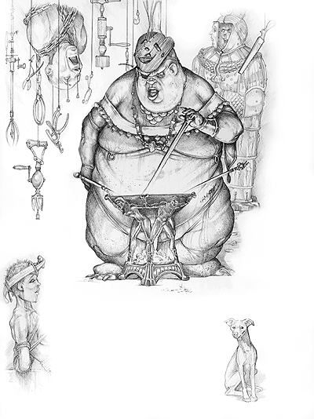

下文所给出的都是用来造成痛苦的工具，每种刑具都能为威吓检定带来环境加值，刑具越有效，环境加值就越高。
一般而言，拷打是为了从受害者嘴里得到有效的情报，但也有时仅仅因为打手想要折磨犯人。有小刀截去别人手指时的狂喜，以及滚烫的铅水浇在别人下巴上时的欢愉对于这些堕落的家伙而言，比毒品还难以抗拒。
拷打规则：
拷打的对象必须被固定，或是被绳子牢牢绑紧，或是铐在刑具上，也可能是被打手牢牢抱住。若对象被固定在刑具上，每轮都可以尝试进行逃脱检定，检定DC可参阅下文表3-1，若对象被抱紧，则可依据普通规则挣脱擒抱。但是，旁边的打手不会白白站着，看着自己的犯人挣脱。若犯人在打手的注视下尝试进行逃脱检定，无论成功与否，打手可以造成致命一击。
当犯人被固定后，打手可以在犯人身上使用任意一种刑具（像是粉碎小女孩的手指。如无特殊说明，时间为1轮）。当打手想要从犯人嘴里得到什么信息时，每种器械都能为打手的威吓检定带来相应的环境加值。威吓检定的DC等于10+犯人的等级或是生命骰数。
当然，犯人也可以在还没受刑的时候就屈膝招供，仅仅用刑具进行威胁就是相当有效的方法。若打手的唬骗检定结果高于犯人的观言察色检定结果，则可以使用刑具一半的环境加值对犯人进行威吓。
当打手使用刑具拷打犯人时，可以对同一情报进行多次威吓检定，这有别于一般的威吓检定。若威吓检定成功，则意味着打手得到了他想要的信息。
犯人可能会给出假情报以结束拷打的痛苦，唬骗检定将用来对抗打手的观言察色检定。由于打手通常相信，严刑拷打可以带来真相，所以甚至会相信最出格的谎言，同时在观言察色上承受-3的环境惩罚。即使是对情报一无所知的角色也有可能通过这种方法避免伤害。
犯人靠说出一切来结束拷打的想法在很多情况下是过于理想了。很多打手即使觉得犯人已经说出了真相，还是会倾向于继续快乐地执行他的工作。
当犯人的生命曾因为拷打而降低至0或更低而被治愈后，打手再次对犯人上刑时，刑具对威吓的环境加值加倍，这种效果只能作用一次。
刑具作为武器：非固定器械，诸如火棍或是手术刀可以被用作近战武器。在近战中，刑具只能造成表3-1中所给出的一半伤害，如果刑具确实能用作武器。例如，中等体形的打手根本不可能挥动铁女架。
精制刑具：精制刑具不能带来更高的环境加值，而只是有着更精良的做工，以及2倍的价格。
刑具介绍：
以下是一些常见刑具，城主可在此基础上自行扩展。
烙铁/火棍（Branding Iron/Poker）：红热的铁被用于造成痛苦而不致命的灼伤。犯人承受1d3的伤害，打手可进行一次威吓。
匕首（Dagge）：事实上，任何武器都可以用来进行拷打。但传统武器伤害力太高，很容易把犯人直接杀死。若打手用匕首进行拷打，可以造成2d4的伤害，并可以进行一次威吓。
铅水（Hot Lead）：打手把铅融化，浇在犯人的皮肤上。通常是手掌，臂膊或是腹部，但也有些更为残忍的打手喜欢将铅水浇眼睛，或是其他脆弱的器官上。每次使用铅水进行拷打可以造成1d3的伤害，并可进行一次威吓。
铁女架（Iron Maiden）：这棺材一样的铁盒子内部充满了尖利的钢针，置于其中的犯人将被无数次刺伤，任何行动都会增加痛苦。铁女架可以选择多种模式，决定铁女架两侧的松紧程度。在低伤害模式下，每轮造成1点伤害。在中伤害模式下，每轮造成5点伤害。在高伤害模式下，每轮造成10点伤害。在终结模式下，每轮造成50 点伤害。犯人位于铁女架内部时，打手可每回合进行一次威吓。
颚骨碎（Jaw Breaker）：这种木制或是金属制的刑具和指骨碎的工作原理正好相反。打手将这种器械安置在犯人的嘴里，缓慢地转动其中一个齿轮。随着齿轮的转动，颚骨碎的上下两侧慢慢分开，粉碎犯人的牙齿甚至是下颚骨。颚骨碎也可以用在犯人其他的器官上。每次使用可以造成2d4的伤害，并可进行一次威吓。一般而言，打手必须先解除颚骨碎，才能让犯人正常言语。
钢针（Needle）：打手可以把钢针或是铁钉砸进犯人最脆弱的器官中，这并不能造成真正的伤害，但却可以带来极大的痛苦。每根钢针可以造成1点伤害，一般而言，每3到4根钢针可以让打手进行一次威吓。
站笼（Pillory）：这种木制的用具，包括一片有窟窿的木板，这并非一种刑具，而是用来限制和固定犯人的用具。当站笼被放置在公共场合的时候，打手，打手的手下，甚至是经过的陌生人都可以随意谩骂，攻击或是羞辱犯人。这使犯人在精神上受到伤害而不紧紧是肉体。每8小时的监禁可以造成1d6的伤害，并可以让打手进行一次威吓。
拷问台（Rack）：这桌子大小的刑具上装备了锁链，镣铐以及绞盘。当打手转动绞盘，犯人的四肢被拉直。在拷问台上度过30分钟会造成1点伤害，并可以让打手进行一次威吓。
手术刀/剥皮刀（Scalpel/Flenser）：这种制作精良的小刀只有很短的锋刃，用于割去病人腐坏的肉体。当打手使用手术刀时，可以削去犯人的皮肉，切断犯人的手指，或是割去犯人的耳朵。每一次使用手术刀，将造成1d6的伤害，并可以让打手进行一次威吓。剥皮刀与手术刀类似，用于剥去犯人的皮肤。
指骨碎（Thumb Screws）：这种小型的木制或是金属制刑具缓慢地粉碎犯人的指骨。造成钻心的疼痛，但之带来1d2的伤害。每一次指骨碎被夹紧，大手都可以进行一次威吓。
捆缚用具（Tied Down）：用于捆缚犯人的用具并非一种刑具。但若犯人看到无数刑具环绕着四周（拷问室的标准情况），打手可以立即进行一次威吓检定（使用刑具一半的环境加值）。
表3-1 刑具
名称 环境加值 逃脱DC 伤害 价格 重量
烙铁／火棍 +3 － 1d3 2gp 4磅
匕首 +4 － 2d4 2gp 1磅
铅水 +3 － 1d3 1sp 1磅
铁女架 － 27 － 200gp 250磅
低伤害模式 +6 － 1 － －
中伤害模式 +8 － 5 － －
高伤害模式 +10 － 10 － －
终结模式 +12 － 50 － －
颚骨碎 +4 － 2d4 10gp 1磅
钢针 +2 － 1 1sp －
站笼 +2 20 1d6 50gp 50磅
拷问台 +5 22 1 150gp 200磅
手术刀／剥皮刀 +4 － 1d6 4gp －
指骨碎 +3 － 1d2 1gp 1磅
捆缚用具 +0 * － 1sp 1磅
*打手的绳技检定结果决定犯人的逃脱检定DC